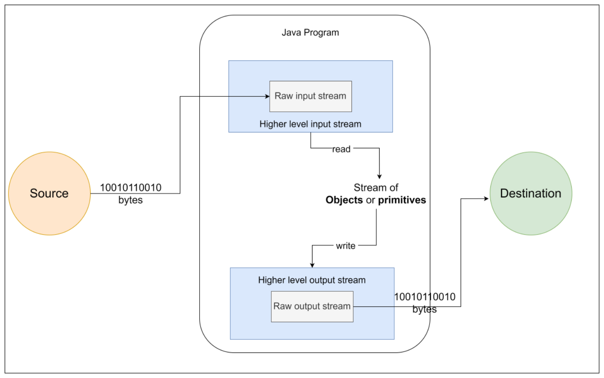

Trong hình trên, hãy quan sát thấy rằng một chương trình Java nhận các byte thô từ nguồn thông qua một input stream thô và dịch các byte thô đó thành các kiểu dữ liệu cần thiết cho chương trình. Tương tự, chương trình ghi các kiểu dữ liệu bằng cách sử dụng một stream cấp cao hơn để chuyển đổi chúng thành các byte. Stream cấp cao hơn sau đó sử dụng một output stream thô để ghi các byte vào đích. Nguồn hoặc đích không quan tâm đến việc các byte được chương trình Java thông dịch hoặc tạo ra như thế nào.
I/O Blocking vs Non-blocking
Trong một thời gian dài, Java chỉ có các lớp trong package java.io để thực hiện các tác vụ liên quan đến I/O. Tuy nhiên, các lớp này triển khai những hoạt động được gọi là hoạt động I/O “blocking” (chặn). Chúng được gọi là blocking vì một khi bạn gọi một phương thức để đọc hoặc ghi dữ liệu bằng cách sử dụng các lớp này, lệnh gọi đó sẽ bị chặn cho đến khi thao tác hoàn tất hoặc cho đến khi stream kết thúc. Ví dụ, nếu bạn cố gắng đọc dữ liệu từ một tệp tin từ xa hoặc từ một socket mạng, Thread (Luồng) đang thực thi phương thức đọc có thể bị chặn trong một thời gian dài và sẽ không có sẵn để thực hiện các tác vụ khác. Mặc dù cách tiếp cận này hoạt động tốt đối với nhiều ứng dụng, nhưng nó không có khả năng mở rộng tốt. Hãy tưởng tượng một máy chủ đang xử lý hàng triệu kết nối từ người dùng và đọc dữ liệu do họ gửi bằng cách sử dụng